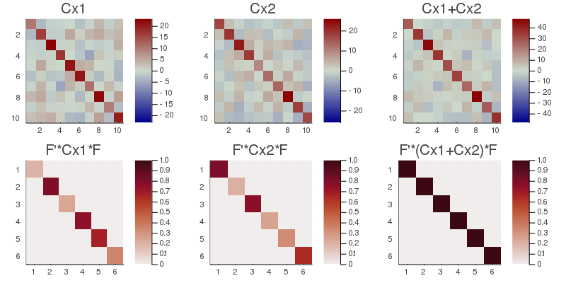
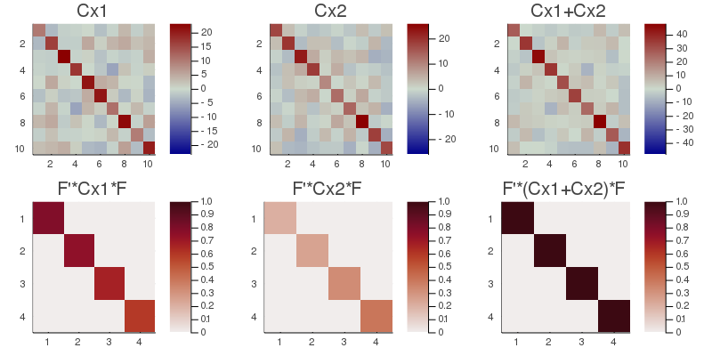

CSP
The Common Spatial Pattern (CSP) are filters obtained by generalized eigenvalue-eigenvector decomposition. They corresponds to the situation $m=1$ (one dataset) and $k=2$ (two observation). The goal of a CSP filter is to maximize a variance ratio. Let $(X_1, X_2)$ be $(n⋅t_1, n⋅t_2)$ data matrices, where $n$ is their number of variables and $(t_1, t_2)$ their number of samples. Let $(C_1, C_2)$ be the $n⋅n$ covariance matrices of data matrices $(X_1, X_2)$ and $C=C_1+C_2$. The CSP consists in the joint diagonalization of $C$ and $C_1$ or, equivalently, of $C$ and $C_2$ (Fukunaga, 1990, p. 31-33 🎓). The joint diagonalizer $B$ is scaled such as to verify (see scale and permutation)
$\left \{ \begin{array}{rl}B^TCB=I\\B^TC_1B=Λ\\B^TC_2B=I-Λ \end{array} \right.$, $\hspace{1cm}$ [csp.1]
That is to say, $λ_1≥\ldots≥λ_n$ are the diagonal elements of $B^TC_1B$ and $1-λ_1≤\ldots≤1-λ_n$ the diagonal elements of $B^TC_2B$. The CSP maximizes the ratio between the variance of the corresponding components of transformed processes $B^TX_1$ and $B^TX_2$, constraining their sum to unity. The ratio is ordered by descending order such as
$σ=[λ_1/(1-λ_1)≥\ldots≥λ_n/(1-λ_n)]$, $\hspace{1cm}$ [csp.2]
The CSP has two use cases, which can be selected using the selMeth optional keyword argument of its constructors:
- a) Separating two classes. In this case $C_1$ and $C_2$ are covariance matrices of two distinct classes. The constructors will retain a filter with form $\widetilde{B}=[B_1 B_2]$, where we have defined partitions $B=[B_1 B_0 B_2]$. $B_1$ and $B_2$ are the first $p_1$ and last $p_2$ vectors of $B$ corresponding to high and low values of the variance ratio [csp.2], that is, explaining variance that is useful for separating the classes, while $B_0$ corresponds to components corresponding to variance ratios close to $1$, meaning that are not useful for separating the classes. The subspace dimension in this use case will be given by $p=p_1+p_2$. Notice that in Diagonalizations.jl we allow $p_1≠p_2$.
- b) Enhance the signal-to-noise ratio. In this case $C_1$ and $C_2$ are covariance matrices of the 'signal' and of the 'noise', respectively. The constructors will retain a filter $\widetilde{B}=[b_1 \ldots b_p]$ holding the first $p$ vectors of $B$ corresponding to the highest values of the variance ratio [csp.2]. The discared $n-p$ vectors correspond to components that explains progressively more and more variance related to the noise process. In this case we have a natural landmark for selecting automatically the subspace dimension $p$, as the larger dimension whose variance ratio is greater then $1$.
In order to retrive the appropriate partitions of $B$ to construct a filter given a subspace dimension $p$, we need a way to measure the distance of the ratios [csp.2] from $1$. For this purpose we will make use of the Fisher distance adopted on the Riemannian manifold of positive definite matrices, in its scalar form, yielding
$δ_i=\textrm{log}^2(σ_i)$, for $i=[1 \ldots n]$. $\hspace{1cm}$ [csp.3]
After this transformation, extreme values of the ratio becomes high, that is, the function $δ_i$ assumes the shape of a (non-symmetric) wine cup and has a minimum close to zero.
Now let $δ_{TOT}=\sum_{i=1}^nδ_i$ be the total distance and define the explained variance of the CSP for dimension $p$ such as
$v_p=\frac{\sum_{j=1}^pδ_j}{δ_{TOT}}$, $\hspace{1cm}$ [csp.4]
where the $δ_j$'s are given by [csp.3]. Note that for use case a) described here above the accumulated sums in [csp.4] are computed after sorting the $δ_i$ values in descending order.
The $.arev$ field of CSP filter is defined as the accumulated variance ratio given by
$[v_1≤\ldots≤v_n]$, $\hspace{1cm}$ [csp.5]
where the $v_i$'s' are defined in [csp.4].
For setting the subspace dimension $p$ manually, set the eVar optional keyword argument of the CSP constructors either to an integer or to a real number (see subspace dimension). If you don't, by default $p$ is chosen (see Fig. 2)
- in use case a) as the larger dimension $p$ whose sorted $δ_p$ value [csp.3] is larger then the geometric mean of $δ$ $1$. $n÷2$ is taken as upper bound.
- in use case b) as the larger dimension $p$ whose $σ_p$ value [csp.2] is larger then $1$.
In both cases the dimension corresponding to the munimum of [csp.3] is taken as an upper bound and $p$ can be equal to at most $n-1$.
 Figure 2 Illustration of the way CSP constrcuctors determines automatically the subspace dimension $p$ under use case a) and b). On the left, we are interested in the $p_1$ and $p_2$ vectors of $B$ associated with extremal values of the variance ratios [csp.2], which are the high values of $δ$ [csp.3] enclosed in the shaded boxes of the figure. The threshold is set to the geometric mean of $δ$. Since Diagonalizations.jl always sorts the explained variance in descending order, $\widetilde{B}$ is defined as $[b_1, b_{10}, b_9, b_2, b_8, b_3]$. On the right, we are interested in the first $p$ vectors of $B$ associated with positive values of the variance ratios [csp.2], which are the high values on the left of the minimum of $δ$ enclosed in the shaded box of the figure. The threshold is set in this case to the first value of $σ$ [csp.2] smaller then $1$, which roughly coincides with the minimum of $δ$ reported in the figure. Assuming in this example they do coincide, $\widetilde{B}$ would be defined as $[b_1 \ldots b_5]$.
Figure 2 Illustration of the way CSP constrcuctors determines automatically the subspace dimension $p$ under use case a) and b). On the left, we are interested in the $p_1$ and $p_2$ vectors of $B$ associated with extremal values of the variance ratios [csp.2], which are the high values of $δ$ [csp.3] enclosed in the shaded boxes of the figure. The threshold is set to the geometric mean of $δ$. Since Diagonalizations.jl always sorts the explained variance in descending order, $\widetilde{B}$ is defined as $[b_1, b_{10}, b_9, b_2, b_8, b_3]$. On the right, we are interested in the first $p$ vectors of $B$ associated with positive values of the variance ratios [csp.2], which are the high values on the left of the minimum of $δ$ enclosed in the shaded box of the figure. The threshold is set in this case to the first value of $σ$ [csp.2] smaller then $1$, which roughly coincides with the minimum of $δ$ reported in the figure. Assuming in this example they do coincide, $\widetilde{B}$ would be defined as $[b_1 \ldots b_5]$.
Solution
The CSP solution $B$ is given by the generalized eigenvalue-eigenvector decomposition of the pair $(C, C_1)$.
A numerically preferable solution is the following two-step procedure:
- get a whitening matrix $\hspace{0.1cm}W\hspace{0.1cm}$ such that $\hspace{0.1cm}W^TCW=I\hspace{0.1cm}$.
- do $\hspace{0.1cm}\textrm{EVD}(W^TC_{1}W)=UΛU^{T}$
The solution is $\hspace{0.1cm}B=WU$.
Constructors
Three constructors are available (see here below). The constructed LinearFilter object holding the CSP will have fields:
.F: matrix $\widetilde{B}$ as defined above. This is just $B$ of [csp.1] if optional keyword argument simple=true is passed to the constructors (see below).
.iF: the left-inverse of .F
.D: the $p⋅p$ diagonal matrix with the elements of $Λ$ [csp.1] corresponding to the vectors of $\widetilde{B}$.
.eVar: the explained variance for the chosen value of $p$, given by the $p^{th}$ value of [csp.5]
.ev: the vector diag(Λ) holding all $n$ diagonal elements of matrix $Λ$ [csp.1].
.arev: the accumulated regularized eigenvalues, defined in [csp.5].
.eVar and .arev are computed on sorted $δ_i$ values in use case a), see [csp.5], [csp.4] and Fig. 2.
Diagonalizations.csp — Function(1)
function csp(C₁ :: SorH, C₂ :: SorH;
eVar :: TeVaro = ○,
eVarC :: TeVaro = ○,
eVarMeth :: Function = searchsortedfirst,
selMeth :: Symbol = :extremal,
simple :: Bool = false)
(2)
function csp(X₁ :: Mat, X₂ :: Mat;
covEst :: StatsBase.CovarianceEstimator = SCM,
dims :: Into = ○,
meanX₁ :: Tmean = 0,
meanX₂ :: Tmean = 0,
wX₁ :: Tw = ○,
wX₂ :: Tw = ○,
eVar :: TeVaro = ○,
eVarC :: TeVaro = ○,
eVarMeth :: Function = searchsortedfirst,
selMeth :: Symbol = :extremal,
simple :: Bool = false)
(3)
function csp(𝐗₁::VecMat, 𝐗₂::VecMat;
covEst :: StatsBase.CovarianceEstimator = SCM,
dims :: Into = ○,
meanX₁ :: Into = 0,
meanX₂ :: Into = 0,
eVar :: TeVaro = ○,
eVarC :: TeVaro = ○,
eVarMeth :: Function = searchsortedfirst,
selMeth :: Symbol = :extremal,
simple :: Bool = false,
metric :: Metric = Euclidean,
w₁ :: Vector = [],
w₂ :: Vector = [],
✓w :: Bool = true,
init₁ :: SorHo = nothing,
init₂ :: SorHo = nothing,
tol :: Real = 0.,
verbose :: Bool = false)Return a LinearFilter object:
(1) Common spatial pattern with covariance matrices C_1 and C_2 of dimension $n⋅n$ as input. The subscript of the covariance matrices refers to the dims used to compute it (see above).
eVar, eVarC and eVarMeth are keyword optional arguments for defining the subspace dimension $p$. Particularly:
- By default, the two-step procedure described above is used to find the solution. In this case
eVarCis used for defining the subspace dimension of the whitening step. IfeVarC=0.is passed, the solution will be find by the generalized eigenvalue-eigenvector procedure. eVaris the keyword optional argument for defining the subspace dimension $p$ using the.arevvector given by [csp.5].eVarMethapplies to botheVarCandeVar. The default value isevarMeth=searchsortedfirst.
if selMeth=:extremal (default) use case a) Separating two classes described above is considered. Any other symbol for selMeth will instruct to consider instead the use case b) Enhance the signal-to-noise ratio.
If simple is set to true, $p$ is set equal to $n$ and only the fields .F and .iF are written in the constructed object. This option is provided for low-level work when you don't need to define a subspace dimension or you want to define it by your own methods.
(2) Common spatial pattern with data matrices X₁ and X₂ as input.
X₁ and X₂ are real or complex data matrices.
covEst, dims, meanX₁, meanX₂, wX₁ and wX₂ are optional keyword arguments to regulate the estimation of the covariance matrices $(C_1, C_2)$ of (X₁, X₂). Particularly (See covariance matrix estimations),
meanX₁is themeanargument for data matrixX₁.meanX₂is themeanargument for data matrixX₂.wX₁is thewargument for estimating a weighted covariance matrix forX₁.wX₂is thewargument for estimating a weighted covariance matrix forX₂.covEstapplies to the estimations of both covariance matrices.
Once the two covariance matrices $C_1$ and $C_2$ estimated, method (1) is invoked with optional keyword arguments eVar, eVarC, eVarMeth, selMeth and simple. See method (1) for details.
(3) Common spatial pattern with two vectors of data matrices 𝐗₁ and 𝐗₂ as input.
𝐗₁ and 𝐗₂ do not need to hold the same number of matrices and the number of samples in the matrices they contain is arbitrary.
covEst, dims, meanX₁ and meanX₂ are optional keyword arguments to regulate the estimation of the covariance matrices for all matrices in 𝐗₁ and 𝐗₂. See method (2) and covariance matrix estimations.
A mean covariance matrix is computed separatedly from the covariance matrices computed from the data matrices in 𝐗₁ and 𝐗₂, using optional keywords arguments metric, w₁, w₂, ✓w, init₁, init₂, tol and verbose. Particularly (see mean covariance matrix estimations),
w₁are the weights for the covariance matrices computed from𝐗₁,w₂are the weights for the covariance matrices computed from𝐗₂,init₁is the initialization for the mean of the covariance matrices computed from𝐗₁,init₂is the initialization for the mean of the covariance matrices computed from𝐗₂.
By default, the arithmetic mean is computed.
See also: CSTP, PCA, AJD, mAJD.
Examples:
using Diagonalizations, LinearAlgebra, PosDefManifold, Test
# Method (1)
t, n=50, 10
X1=genDataMatrix(n, t)
X2=genDataMatrix(n, t)
Cx1=Symmetric((X1*X1')/t)
Cx2=Symmetric((X2*X2')/t)
C=Cx1+Cx2
cC=csp(Cx1, Cx2; simple=true)
Dx1=cC.F'*Cx1*cC.F
@test norm(Dx1-Diagonal(Dx1))+1≈1.
Dx2=cC.F'*Cx2*cC.F
@test norm(Dx2-Diagonal(Dx2))+1≈1.
@test cC.F'*C*cC.F≈I
@test norm(Dx1-(I-Dx2))+1≈1.
# Method (2)
c12=csp(X1, X2, simple=true)
Dx1=c12.F'*Cx1*c12.F
@test norm(Dx1-Diagonal(Dx1))+1≈1.
Dx2=c12.F'*Cx2*c12.F
@test norm(Dx2-Diagonal(Dx2))+1≈1.
@test c12.F'*C*c12.F≈I
@test norm(Dx1-(I-Dx2))+1≈1.
@test cC==c12
k=10
Xset=[genDataMatrix(n, t) for i=1:k]
Yset=[genDataMatrix(n, t) for i=1:k]
# Method (3)
# CSP of the average covariance matrices
c=csp(Xset, Yset)
# ... selecting subspace dimension allowing an explained variance = 0.5
c=csp(Xset, Yset; eVar=0.5)
# ... subtracting the mean from the matrices in Xset and Yset
c=csp(Xset, Yset; meanX₁=nothing, meanX₂=nothing, eVar=0.5)
# csp on the average of the covariance and cross-covariance matrices
# computed along dims 1
c=csp(Xset, Yset; dims=1, eVar=0.5)
# name of the filter
c.name
using Plots
# plot regularized accumulated eigenvalues
plot(c.arev)
# plot the original covariance matrices and the transformed counterpart
# example when argument `selMeth` is `extremal` (default): 2-class separation
cC=csp(Cx1, Cx2)
Cx1Max=maximum(abs.(Cx1));
h1 = heatmap(Cx1, clim=(-Cx1Max, Cx1Max), title="Cx1", yflip=true, c=:bluesreds);
h2 = heatmap(cC.F'*Cx1*cC.F, clim=(0, 1), title="F'*Cx1*F", yflip=true, c=:amp);
Cx2Max=maximum(abs.(Cx2));
h3 = heatmap(Cx2, clim=(-Cx2Max, Cx2Max), title="Cx2", yflip=true, c=:bluesreds);
h4 = heatmap(cC.F'*Cx2*cC.F, clim=(0, 1), title="F'*Cx2*F", yflip=true, c=:amp);
CMax=maximum(abs.(C));
h5 = heatmap(C, clim=(-CMax, CMax), title="Cx1+Cx2", yflip=true, c=:bluesreds);
h6 = heatmap(cC.F'*C*cC.F, clim=(0, 1), title="F'*(Cx1+Cx2)*F", yflip=true, c=:amp);
📈=plot(h1, h3, h5, h2, h4, h6, size=(800,400))
# example when argument `selMeth` is different from `extremal`: enhance snr
cC=csp(Cx1, Cx2; selMeth=:enhaceSNR)
Cx1Max=maximum(abs.(Cx1));
h1 = heatmap(Cx1, clim=(-Cx1Max, Cx1Max), title="Cx1", yflip=true, c=:bluesreds);
h2 = heatmap(cC.F'*Cx1*cC.F, clim=(0, 1), title="F'*Cx1*F", yflip=true, c=:amp);
Cx2Max=maximum(abs.(Cx2));
h3 = heatmap(Cx2, clim=(-Cx2Max, Cx2Max), title="Cx2", yflip=true, c=:bluesreds);
h4 = heatmap(cC.F'*Cx2*cC.F, clim=(0, 1), title="F'*Cx2*F", yflip=true, c=:amp);
CMax=maximum(abs.(C));
h5 = heatmap(C, clim=(-CMax, CMax), title="Cx1+Cx2", yflip=true, c=:bluesreds);
h6 = heatmap(cC.F'*C*cC.F, clim=(0, 1), title="F'*(Cx1+Cx2)*F", yflip=true, c=:amp);
📉=plot(h1, h3, h5, h2, h4, h6, size=(800,400))
